使用小程序
做的光立方比较小， 体积差不多是9cm*9cm*9.5cm 看到坛里光立方的整体外观是在不咋样。 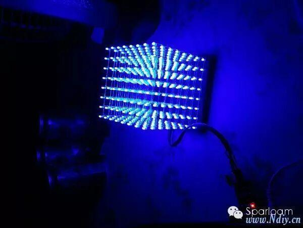 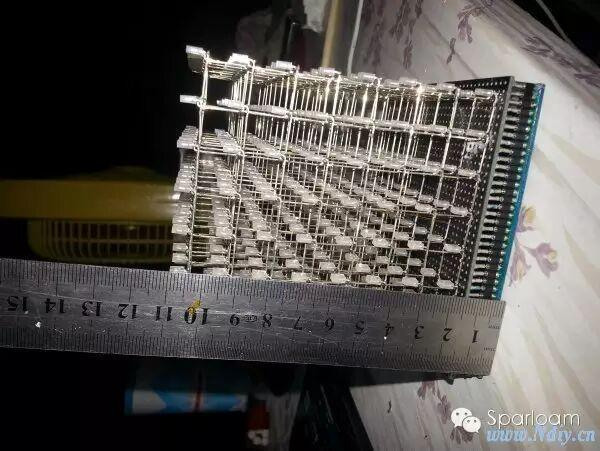 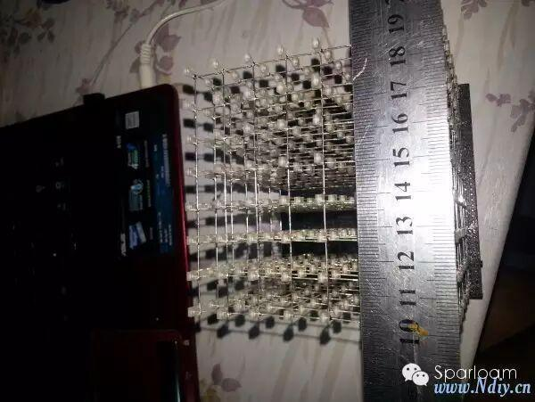 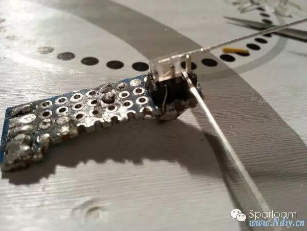 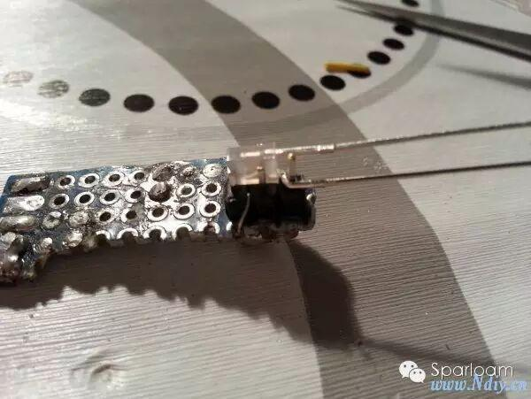 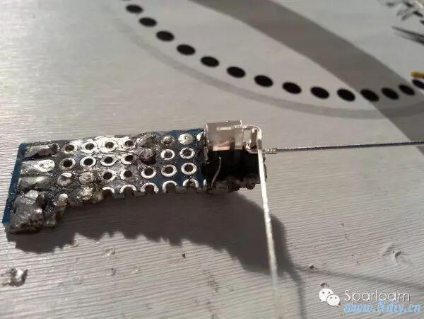 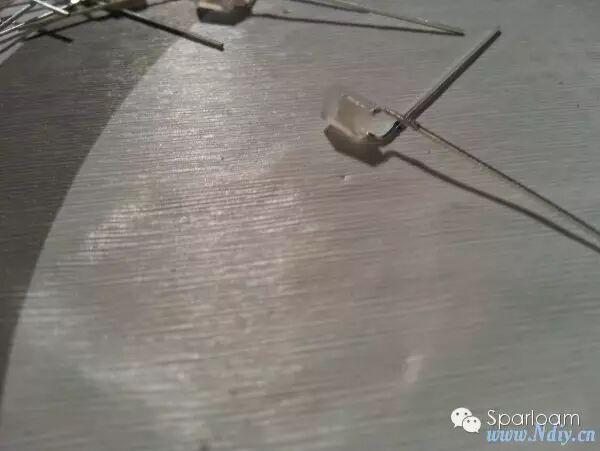 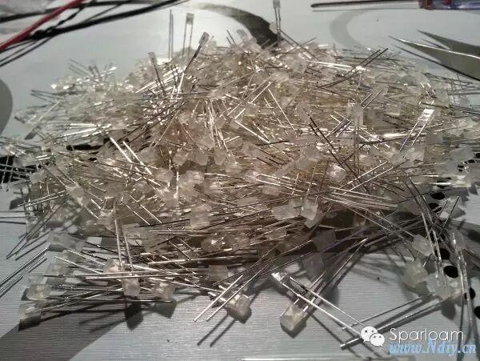 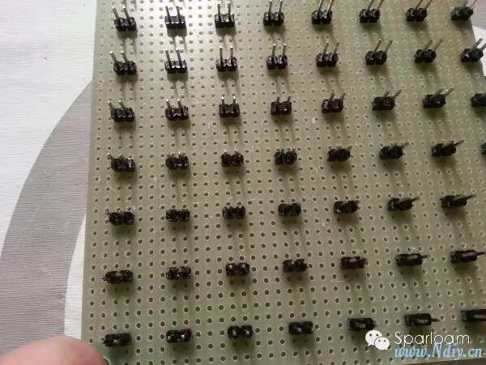 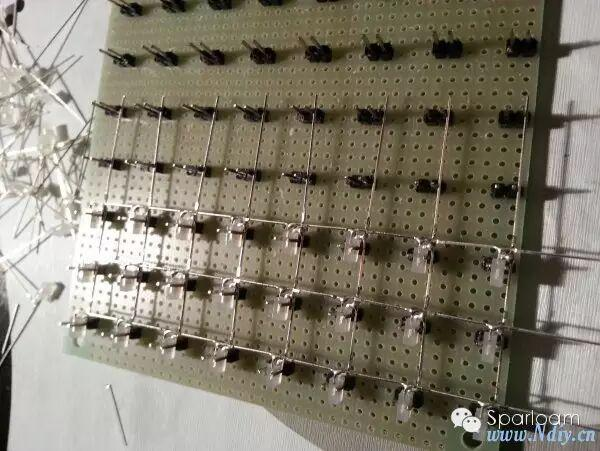 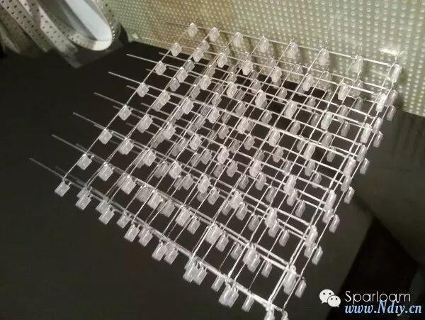 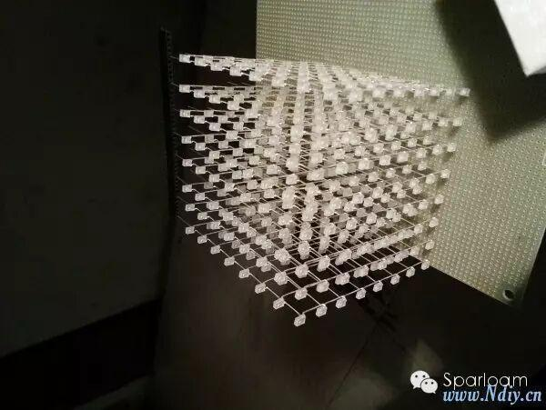 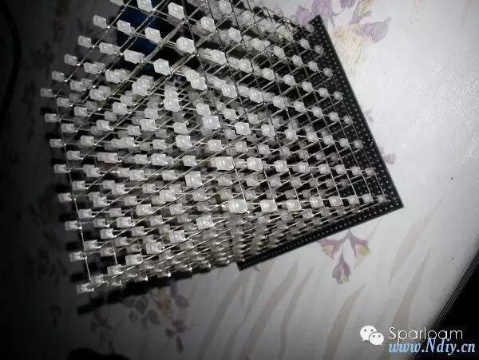 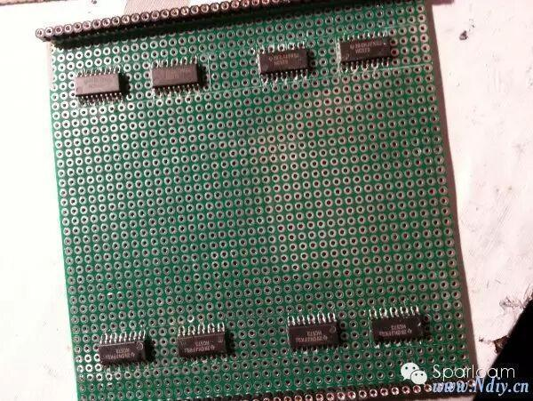 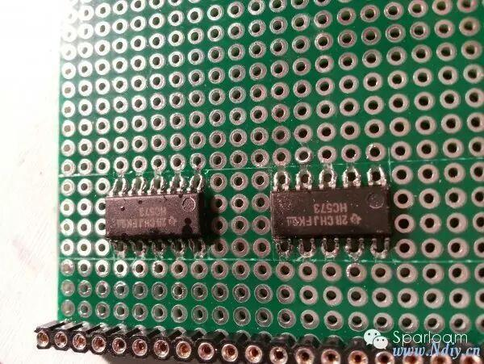 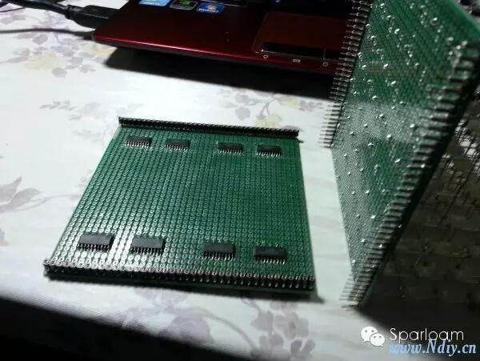 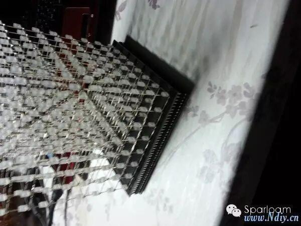 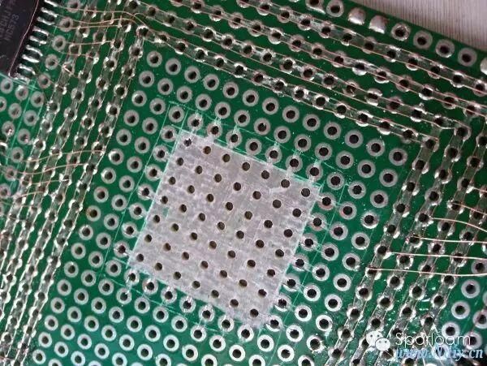 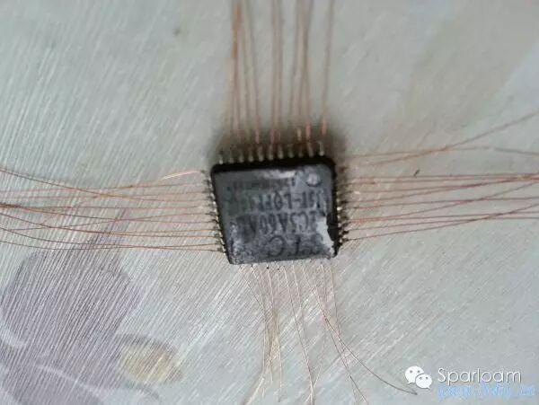 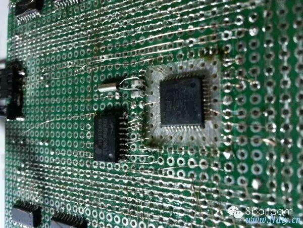 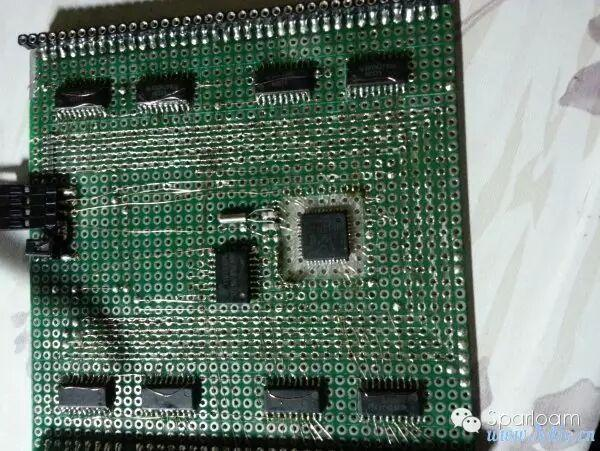 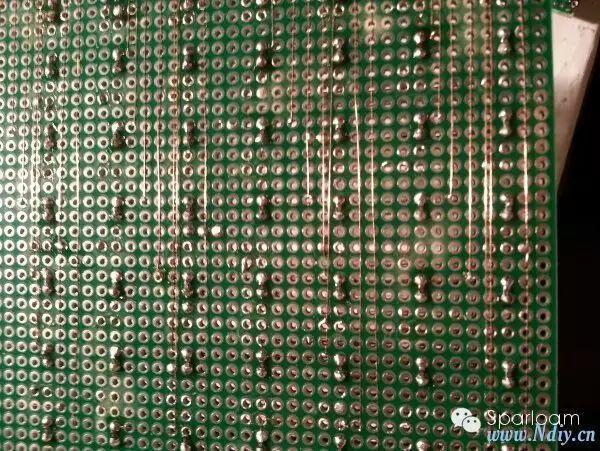 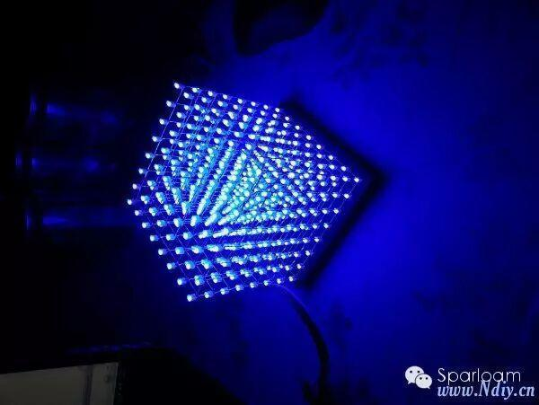 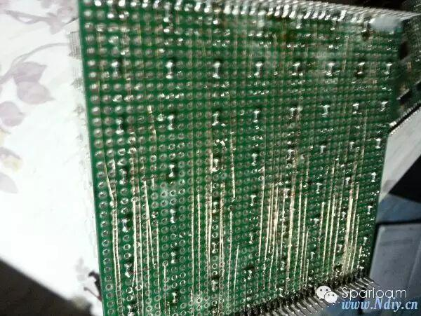 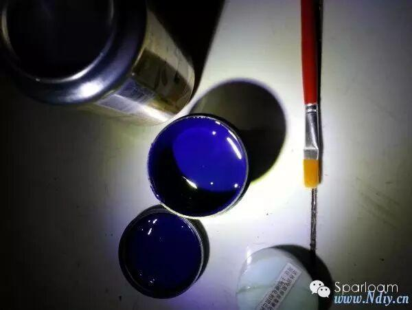 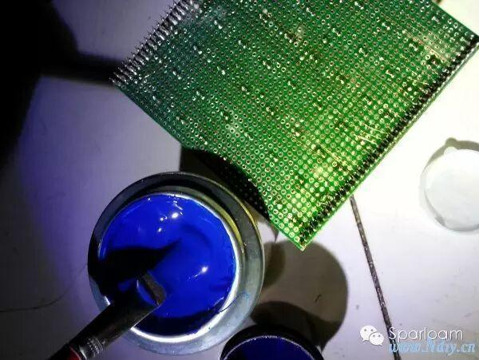 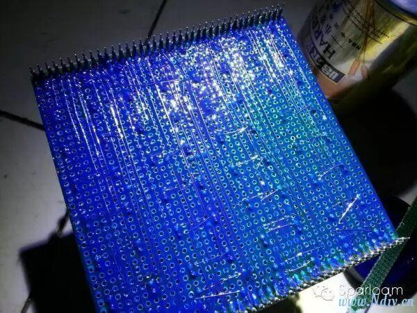 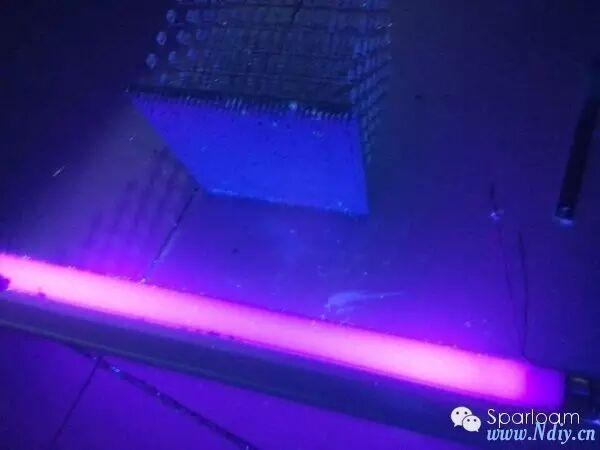 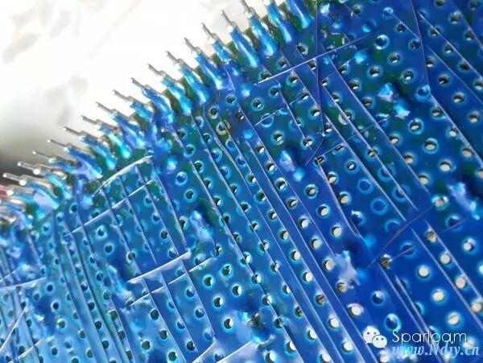 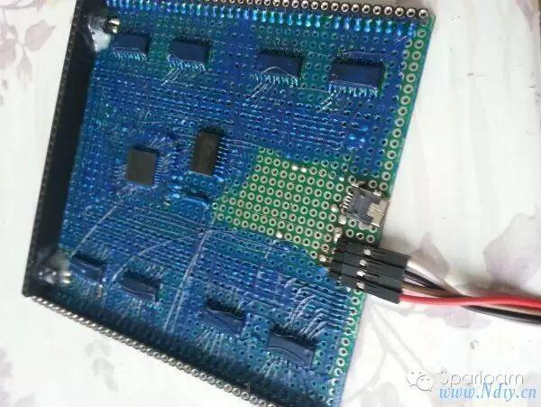 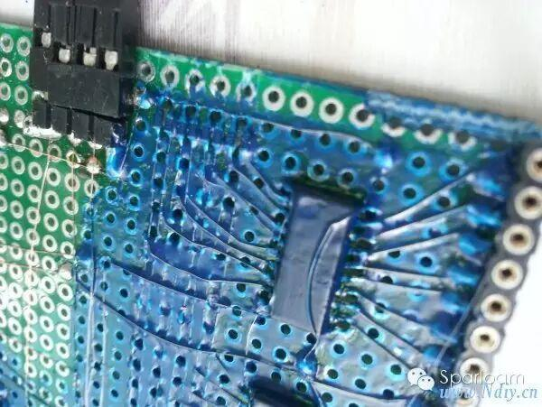 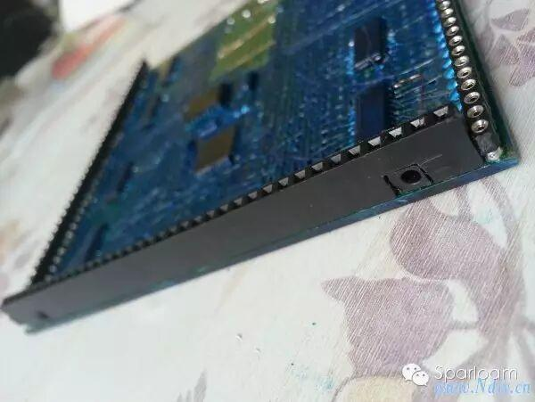 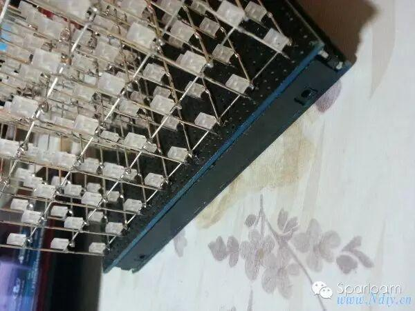 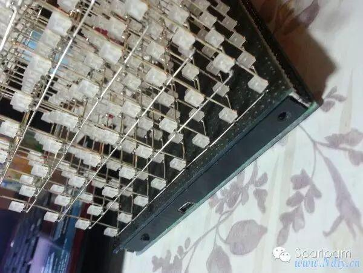 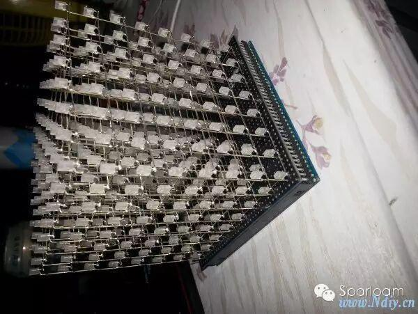
特地使用洞洞板 焊接全贴片元件。大家看看。手机拍的 微距效果不好
先来个整体图引诱下。
建议不要做太大。容易变形 我做的9cm*9cm*9.5cm
看看外观尺寸 应该算是比较迷你的光立方了。
现在来说制作过程。。
做的一个小夹具，用来弯脚
弯好之后的效果
600个啊。。 弯了六七个小时
再做个夹具。。用的2.54的排针
摆好，剪脚，焊接，乏味的过程
焊好后用镊子慢慢撬起来。然后整形一下
花了十几个小时焊完8个面
底板就是刚才做夹具的板子，喷成黑色的了
开始做控制底座 8个573 贴片焊洞洞板应该不多见吧
放大看看。其实就是把焊盘切成两半了
使用军品排针 上下可插拔设计
插上看看效果，没那么吓人的外围电路了吧
模仿原理图里的总线。哈哈 想法还不错吧
12C5A60AD 焊上铜线。。这个费眼不好焊
2803 对了。2803是要加上拉的 不然工作不了。
全貌
这个是LED的底部 64个脚都接了100ohm电阻 分别和两边的排针项链。
上电测试 一切正常
把上部分拆下来。为了保护飞线，刷上蓝油
感光阻焊蓝油 与固化剂
易拉罐翻过来刚好可以用来调油墨
刷好之后
然后曝光
看看刷好阻焊油墨后 铜线都固定住了。这下稳定多了。
底板也刷了一下。追求稳定哈。 留了一块位置扩展。准备换成迷你USB接口做程序下载口
看看P0口的上拉电阻。。
突然发现排针是一个好东西。。看看电源接口。
看看整体外观 两个供电接口 诺基亚那种小插孔的
这边是迷你USB是程序下载口。 左边是哥按钮开关。右边是光敏电阻的孔。（留着扩展）
适合 人穷 ，又追求外形的同学们。~
程序还在学，网上找了段现成的程序烧进去 效果不错。。
转载于中国电子DIY网
编者/高星华